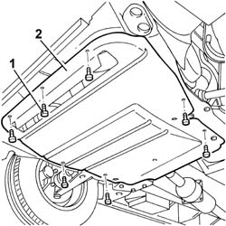

7055B54 UNDER-ENGINE GUARD - R R
- Path
- Procedures > 70 FITTINGS > 7055 MOULDINGS ON PROTECTIONS > 7055B EXTERIOR PROTECTIONS > 7055B54 UNDER-ENGINE GUARD - R R
- Kind
- repair procedure (removal / refitting; the operation number is the code)
- Applies to
- all engines; all production periods
- Interactive page
- https://sloeber94.github.io/elrnDB-fUlss/en/#/179007930
Applies to: all engines; all production periods
 Removing
Removing
 Refitting
Refitting1. Undo the retaining bolts.
2. Remove the shield under the engine.

Applies to: all engines; all production periods
Refitting
Removing- Position the rear guard under the engine and tighten the fixing bolts.
Topics that link to this page (120)
- 0010T12 ENGINE OIL AND FILTER - REPLACE
- 0010T44 CHANGE AUTOMATIC TRANSMISSION FLUIDS
- 0010T45 AUTOMATIC TRANSMISSION FLUID CHECK LEVEL AND TOP UP IF NECESSARY
- 0010T20 COOLANT CHECK DENSITY AND TOP UP IF NECESSARY
- 0010T40 MANUAL GEARBOX OIL CHECK LEVEL AND TOP UP IF NECESSARY
- 0010T41 MANUAL GEARBOX OIL CHECK LEVEL AND TOP UP IF NECESSARY
- 1004B10 POWER UNIT WITH MANUAL GEARBOX - R.R
- 1004B14 POWER UNIT WITH AUTOMATIC TRANSMISSION R + R
- 1008A42 POWER UNIT RIGID SUPPORT - GEARBOX SIDE - R.R.
- 1008A46 POWER UNIT RIGID SUPPORT - TIMING SIDE - R.R.
- 1008B10 POWER UNIT FRONT SUPPORT FLEXIBLE MOUNTING (TIMING SIDE) - REPLACE
- 1008B30 GEARBOX SIDE SUPPORT FLEXIBLE MOUNTING(S) - REPLACE
- 1008C14 ENGINE LINK BRACKET - R R
- 1008C30 POWER UNIT LOWER REACTION LINK - R.R.
- 1008C33 BRACKET ON ENGINE FOR LOWER REACTION ROD - R.R.
- 1016C10 SINGLE CYLINDER HEAD - R.R. AND REPLACE GASKET
- 1016B10 SINGLE CAMSHAFT HOUSING - REPLACE GASKET
- 1016B20 LEFT CAMSHAFT HOUSING - REPLACE GASKET
- 1016B24 RIGHT CAMSHAFT HOUSING - REPLACE GASKET
- 1020A10 <x>CRANKCASE SUMP - R&R AND REPLACE GASKET</x>
- 1020A30 ENGINE OIL DRAIN PLUG - REPLACE
- 1020A20 CRANKCASE OIL SUMP - R.R CLEAN SURFACES FOR SEALANT APPLICATION
- 1020A46 OIL SUMP BULKHEAD - R R
- 1020D14 FRONT CRANKSHAFT OIL SEAL COVER - R.R AND REPLACE SEALS FOR VERSIONS WITH OIL PUMP ON CRANKSHAFT, TIMING SIDE
- 1020D12 FRONT CRANK SHAFT OIL SEAL COVER - R + R AND REPLACE SEALS
- 1020D18 FRONT CRANK SHAFT COVER OIL SEAL - REPLACE
- 1020D38 FLYWHEEL SIDE OIL SEAL - REPLACE
- 1024B10 ENGINE FLYWHEEL - R + R FOR VERSIONS WITH MANUAL GEARBOX
- 1024B54 ENGINE FLYWHEEL PROTECTION R R
- 1024F30 ENGINE BALANCING SHAFTS - R.R.
- 1028H10 PISTON WITH CONNECTING ROD - R R
- 1032B10 TOOTHED TIMING BELT - R + R FOR TIMING ADJUSTMENT OR REPLACEMENT
- 1032B46 TOOTHED DRIVE PULLEY - R + R
- 1032B52 TOOTHED DRIVEN PULLEY (ONE) - R + R
- 1032C18 MOBILE TIMING SYSTEM TENSIONER - R + R FOR 24 VALVE ENGINES
- 1032C31 FIXED TIMING TENSIONER - R R
- 1032C32 FIXED TIMING SYSTEM TENSIONER (ONE) R + R
- 1032D12 TIMING SYSTEM PROTECTIVE COVER(S) - R + R
- 1036B50 CAMSHAFT FLYWHEEL - R.R.
- 1036C10 CAMSHAFTS IN CAMSHAFT HOUSING - R.R - INCLUDES CAMSHAFT HOUSING REPLACEMENT, IF NECESSARY
- 1036C39 TIMING VARIATOR ON CYLINDER HEAD INTAKE CAMSHAFT - R R
- 1036L10 CAMSHAFT IN CYLINDER HEAD - R R ON VEHICLE
- 1036G10 CAMSHAFT CONTROLLING VALVES IN LEFT CAMSHAFT HOUSING - R.R. - INCLUDES REPLACEMENT OF CAMSHAFT HOUSING, IF NECESSARY
- 1036G20 CAMSHAFT CONTROLLING INTAKE VALVES IN TOP HEAD - R + R WITH TOP HEAD REMOVED - INCLUDES REPLACEMENT OF TOP HEAD IF NECESSARY
- 1048A50 AIR INLET PIPE TO TURBO CHARGER - R + R
- 1048B10 RIGID AIR DELIVERY PIPE BETWEEN TURBO CHARGER AND HEAT EXCHANGER - R + R
- 1048B14 AIR DELIVERY PIPE BETWEEN TURBO CHARGER AND HEAT EXCHANGER - REPLACE
- 1048B50 TURBO CHARGER INTERCOOLER - R + R
- 1056B90 SYSTEM CABLE BUNDLE - R + R
- 1060E10 PRESSURE PUMP - R R
- 1060E30 PRESSURE PUMP PULLEY - R R
- 1060E40 SUPPLEMENTARY PRESSURE PUMP - R R
- 1064A19 TURBOCHARGER UNIT - EXHAUST MANIFOLD - COUPLING SLEEVE AND EXHAUST PIPES - R R
- 1072B10 INLET MANIFOLD - R + R AND REPLACE SEAL
- 1072C10 EXHAUST MANIFOLD - R + R AND REPLACE SEAL
- 1072C40 L.H. EXHAUST MANIFOLD HEAT SHIELD ON BULKHEAD R + R
- 1076B10 EXHAUST PIPE ASSEMBLY - R + R
- 1080B38 LEFT CATALYTIC PRECONVERTER R R OR REPLACE CYLINDER HEAD GASKET
- 1080B39 RIGHT CATALYTIC PRECONVERTER R R OR REPLACE CYLINDER HEAD GASKET
- 1080B92 LEFT UPPER LAMBDA SENSOR R R
- 1080B93 RIGHT UPPER LAMBDA SENSOR R R
- 1080B96 LEFT REAR LAMBDA SENSOR ON CATALYTIC CONVERTER R R
- 1080B97 RIGHT REAR LAMBDA SENSOR ON CATALYTIC CONVERTER R R
- 1080G10 CATALYTIC CONVERTER - R.R.
- 1084A40 ENGINE OIL LEVEL SENSOR - R + R
- 1084A42 ENGINE OIL TEMPERATURE SENDER UNIT - R + R
- 1084C10 ENGINE OIL HEAT EXCHANGER - R + R
- 1084B12 ENGINE OIL PUMP - R+R
- 1084B30 ENGINE OIL FILTER R R
- 1084B34 CARTRIDGE ENGINE OIL FILTER SUPPORT - R + R
- 1084B40 ENGINE OIL DELIVERY PIPE TO TURBOCHARGER - R + R
- 1084B42 ENGINE OIL RETURN PIPE FROM TURBO - R + R
- 1088D34 RIGID PIPE/CONNECTOR (ONE) FOR ENGINE COOLING CIRCUIT - R.R.
- 1088D10 LOWER SLEEVE FOR COOLANT OUTLET FROM RADIATOR - R + R
- 1088D14 UPPER SLEEVE FOR COOLANT INLET TO RADIATOR - R + R
- 1088D18 HOSE BETWEEN RIGID PIPE AND THERMOSTAT - R.R.
- 1088D22 WATER PUMP INLET CONNECTOR - R.R.
- 1088D24 RIGID PIPE FOR COOLANT INLET TO WATER PUMP - R + R
- 1088D32 <x>COOLANT MANIFOLD IN CYLINDER HEAD - R&R</x>
- 1088D47 OIL EXCHANGE SLEEVE - R R
- 1088D53 RIGID SUPPLY OR RETURN PIPES FOR ENGINE OIL HEAT EXCHANGER - R.R.
- 1088B20 ENGINE COOLING RADIATOR - R + R
- 1088B26 ENGINE COOLING RADIATOR PROTECTIONS/AIR DUCTS - ARRANGE
- 1088B32 ENGINE COOLING RADIATOR SUPPORT BEAM - R R
- 1088C10 WATER PUMP - R + R
- 1088C30 THERMOSTAT UNIT - R+R
- 1092A10 CRANKSHAFT PULLEY - R + R
- 1092G14 ENGINE COMPONENT SINGLE BELT MOBILE TENSIONER - R + R
- 1092G20 ENGINE COMPONENT SINGLE BELT FIXED TENSIONER - ONE - R + R
- 1820B30 CLUTCH HYDRAULIC ACTUATOR - R.R.
- 1820B20 MASTER CYLINDER (PUMP) - R + R
- 1820B40 HOSE FROM CLUTCH RESERVOIR TO MASTER CYLINDER (PUMP) - R + R
- 1820B49 SUPPLY PIPE FROM (PUMP) - MASTER CYLINDER R.R.
- 2110B40 5TH SPEED GEARS OF MANUAL GEARBOX WITH DIFFERENTIAL - R + R ON VEHICLE
- 2110C30 GEARBOX REAR COVER - R + R.
- 2110A10 MANUAL GEARBOX AND DIFFERENTIAL - R + R
- 2130A10 AUTOMATIC TRANSMISSION - R + R
- 2130B36 AUTOMATIC TRANMISSION VALVE COVER R R
- 2130B40 GEAR SELECTION SOLENOID UNIT - R R
- 2130B12 AUTOMATIC TRANSMISSION TORQUE CONVERTER - R+R
- 2130B48 GEAR SELECTOR ON AUTOMATIC TRANSMISSION - R R
- 2135B72 ELECTRONIC AUTOMATIC TRANSMISSION INPUT RPM SENSOR - R R
- 2135B58 ELECTRONIC AUTOMATIC TRANSMISSION SYSTEM WIRING - R R
- 2135B74 ELECTRONIC AUTOMATIC TRANSMISSION OUTPUT RPM SENSOR - R R
- 3340B56 RIGID PIPE FROM HYDRAULIC CONTROL UNIT TO RIGHT FRONT BRAKE - R.R.
- 4130A10 POWER STEERING BOX - R+R
- 4130B27 POWER ASSISTED STEERING PUMP AND ALTERNATOR MOUNTING - R.R.
- 4130B40 OUTLET PIPE FROM PUMP TO POWER STEERING CASE R R
- 4410C10 FRONT SUSPENSION STABILIZER BAR - R+R - CHECK WHEEL GEOMETRY SEPARATELY
- 4410D10 FRONT SUSPENSION FRAME - R+R
- 5010A12 ENGINE/HEATER LINE - R R
- 5040A20 AIR CONDITIONER COMPRESSOR - R+R - INCLUDES FLUID LEVEL CHECK AND TOP UP IF NECESSARY
- 5040A40 AIR CONDITIONER CONDENSER - R+R
- 5040A54 PIPE FROM DEHYDRATING FILTER TO EXPANSION VALVE - R+R
- 5040B14 AIR CONDITIONER SYSTEM MULTI-LEVEL PRESSURE SWITCH - R+R
- 5505A38 POWER UNIT/BODY EARTH WIRE - R+R
- 5530A10 ALTERNATOR - R+R
- 5520B10 STARTER MOTOR - R+R
- 5540C44 BAR FOR FRONT SENSOR FOR CORRECTING/ALIGNING GAS DISCHARGE LIGHTING UNITS R R
- 2710A10 DRIVE SHAFT WITH JOINTS (ONE), L/H OR R/H - R + R